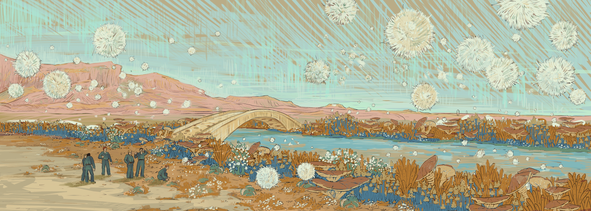
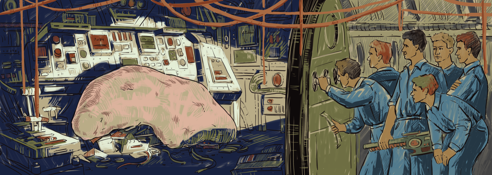
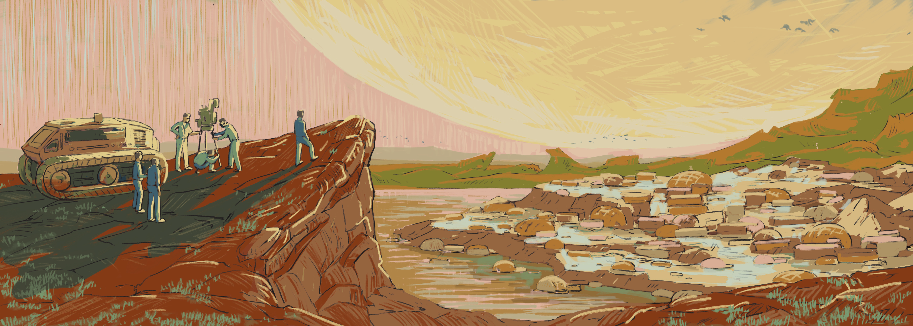
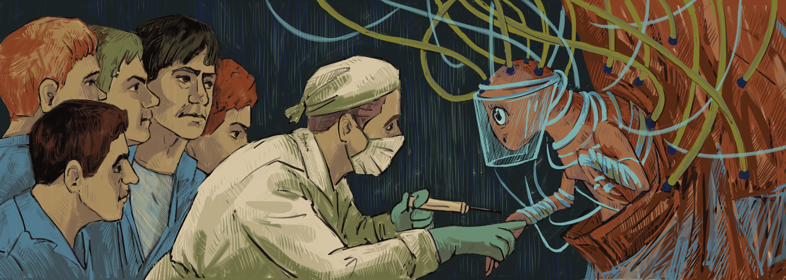

Эдем
Экипаж землян терпит крушение на неизученной планете, где живут двутелы.
| Название | «Эдем» — научно-фантастический роман Станислава Лема (1958) |
|---|---|
| Год | 1958 |
| Область работы | Костюмы, спектакль |
| Описание | Экипаж из шести землян терпит крушение на неизученной планете Эдем. Пытаясь починить корабль, они исследуют чужой мир и сталкиваются с высокоразвитой цивилизацией двутелов. |

 1.jpg 1.jpg |  2.jpg |
 3.jpg |  4.jpg |
 5.jpg 5.jpg |  6.jpg 6.jpg |